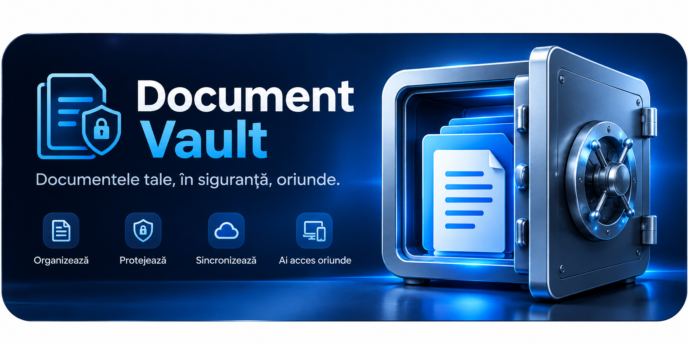

Organizare documente
Categorii, etichete, câmpuri personalizate și atașamente pentru fiecare document.
Pentru Windows și Android
Document Vault te ajută să organizezi, să protejezi și să sincronizezi documentele importante într-un seif digital pe care îl controlezi.
Păstrează documentele local, creează backupuri și activează Google Drive doar dacă ai nevoie de sincronizare.

Totul într-un singur loc
De la captură și organizare la backup și acces offline, funcțiile sunt construite pentru folosirea de zi cu zi.
Categorii, etichete, câmpuri personalizate și atașamente pentru fiecare document.
Capturează pagini cu telefonul și salvează scanările ca PDF.
Câmpurile Password/PIN și atașamentele interne sunt criptate în seiful local.
Creează copii de siguranță pe care le poți păstra separat de dispozitiv.
Sincronizează payloaduri criptate doar după ce alegi să conectezi contul Google.
Folosește seiful local și pregătește modificările pentru sincronizare când revine conexiunea.
Securitate explicată clar
Parola principală nu este păstrată în clar. Aplicația criptează câmpurile sensibile, atașamentele interne, backupurile și înregistrările trimise pentru sincronizare.
Citește politica de confidențialitateMetadatele obișnuite din baza locală pot rămâne în clar. Protejează contul dispozitivului și păstrează copii de siguranță într-un loc sigur.
Google Drive este opțional. Fără conectare, documentele rămân în seiful local.
Sincronizare la alegerea ta
Document Vault folosește Google Drive numai dacă activezi sincronizarea. Solicită exclusiv permisiunea https://www.googleapis.com/auth/drive.file.
Acest scope permite accesul doar la fișierele create sau deschise cu aplicația, nu la întregul tău Drive. Document Vault nu cere acces la Gmail, Contacte sau Calendar. Poți deconecta Google Drive din aplicație.
Detalii despre datele GoogleSincronizarea acceptă doar dispozitive configurate pentru același seif. Două seifuri diferite nu sunt combinate automat.
Pe dispozitivele tale
Organizează și consultă documentele pe un ecran mare. Caută rapid, administrează backupurile și conectează opțional Google Drive.
Scanează documente, atașează fișiere și, dacă alegi, deblochează seiful cu biometrie pe dispozitive compatibile.
Document Vault
Află cum sunt protejate datele tale și ce înseamnă conectarea opțională la Google Drive.